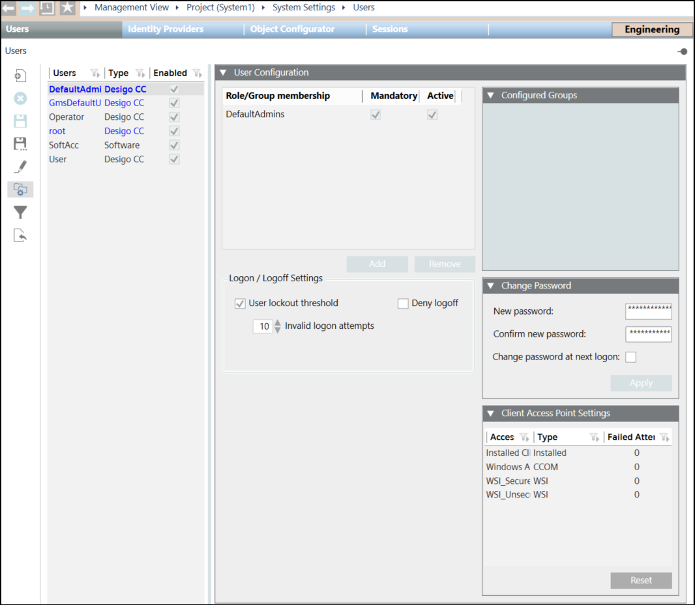

User Roles/Group Membership Table
You can enable or disable roles for users depending on the selection of the Active and Mandatory checkboxes. Following are the different situations in which a role can be activated or deactivated:

User Role/Group Membership | Mandatory | Active | Comments |
Role | ✘ | ✘ | Role is not a mandatory role and is not enabled for the assigned user. When the user logs in to Flex Client, the role displays in the User Roles dialog box and can be enabled by the user. |
Role | ✘ | ✔ | Role is enabled and the user can view all the information as configured by the scope rights for this role. The user can disable the role from Flex Client. For example, User 2 is assigned two roles, HVAC_App and Security_Mgmt. When User 2 logs into Flex Client, all the information as configured by the scope rights for these two roles displays. The HVAC_App role also displays in the User Roles dialog box in Flex Client as it is non-mandatory and is enabled. |
Role | ✔ | ✔ | Role is mandatory and enabled. The user is assigned to this role by default and can view all the information as configured by the scope rights for this role. However, this role does not display in the User Roles dialog box when the user logs in to Flex Client and therefore cannot disable it. For example, for User 2, the Security_Mgmt role is assigned by default. Therefore, User 2 cannot see this role in the User Roles dialog box in Flex Client and cannot disable this role. |
Role | ✔ | ✘ | Role is mandatory but not enabled. The user is assigned to this role by default, however, the role is not enabled. When the user logs into Flex Client, this role does not display in the User Roles dialog box. |